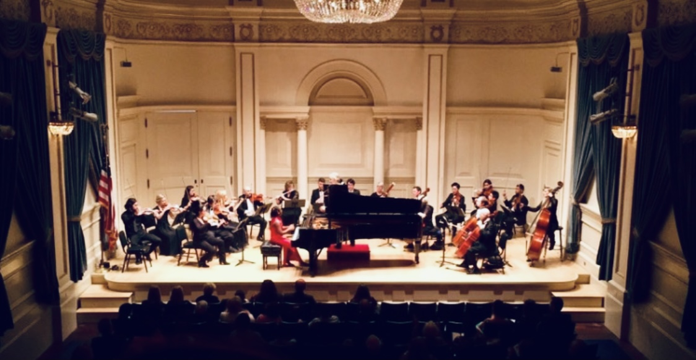
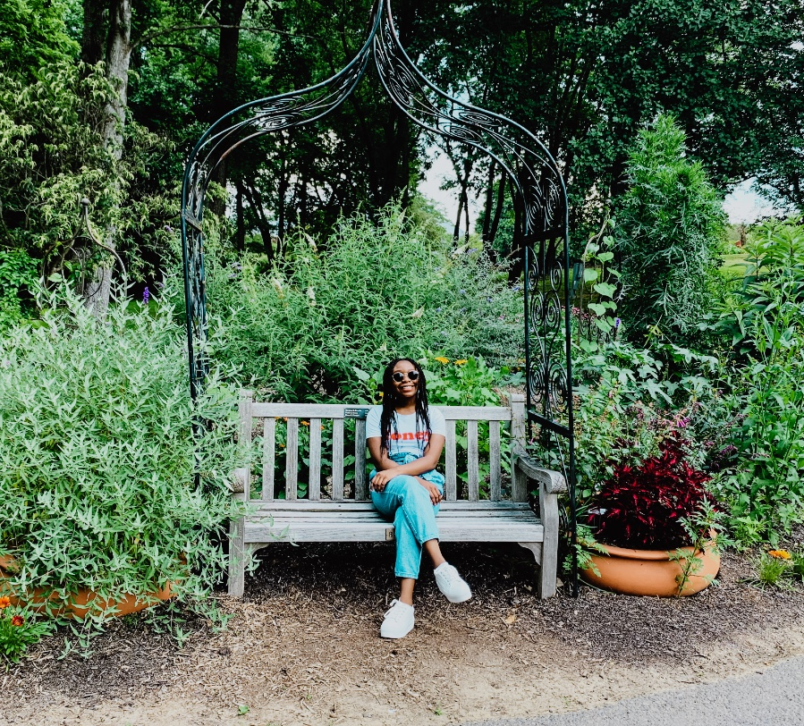

Ashley Ondoua is a native of Cameron. She began taking piano lessons at the age of three in Cameroon, showing early promise that led her to play in American and British embassies there. She Ashley found many opportunities in the US, including studying piano and voice. Alongside her love for music, Ashley is a lover of nature. When she is not studying, practicing the piano, or editing her blog, she can be found cooking, going on walks, taking pictures of nature, and having out with her friends.
April 6, 2017.
Posted by Ashley Ondoua on June 13, 2022
Click here to get back to the top of the page!Meadowlark Botanical Garden.
My top 5 favorite places in DMV area
When you hover on or near the word, you can click it and you will be brought to the place's website